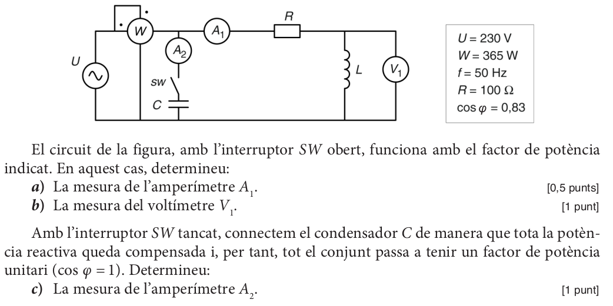
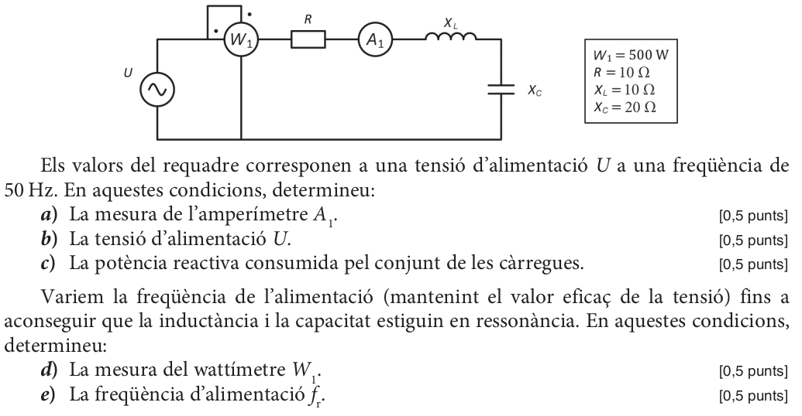
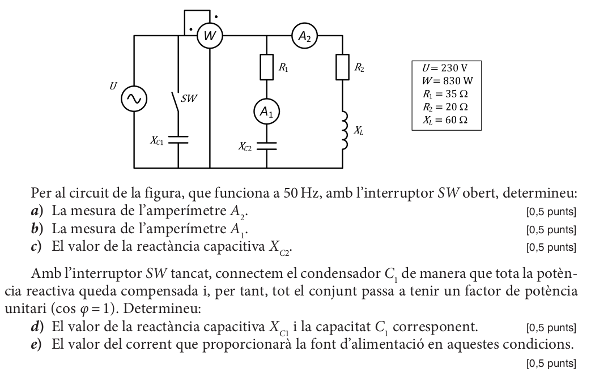
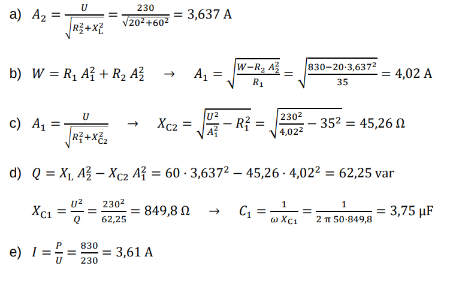

Circuits AC#
Estudi d’un circuit RC sèrie#
Tornem al nostre circuit d’exemple. Ara trobarem tots els resultats disponibles de forma sistemàtica.
Un circuit sèrie amb una resistència \(R = 10 \ \Omega\) i un condensador \(C = 162,48 \ \mu F\) està connectat a una xarxa monofàsica \(U = 200 V\) i \(f = 50 Hz\)
Show code cell source
import numpy as np
import matplotlib.pyplot as plt
Dades#
R = 10
C = 162.48 * 10**(-6)
U = 220
f = 50
w = 2 * np.pi * f
Càlcul de les impedàncies#
Xc = 0 -1j/(C*w)
Xc
-19.590711852769j
\(X_{C} = 19.59_{-90^{\circ}} \ \Omega\)
Z = R + Xc
Z
(10-19.590711852769j)
modZ = np.abs(Z)
modZ
21.995362940816044
angZ = np.degrees(np.angle(Z))
angZ
-62.958143957668284
\(Z = 22_{-62,96^{\circ}} \ \Omega\)
Show code cell source
%matplotlib inline
plt.annotate('', xy=(np.real(Z), np.imag(Z)), xytext=(0, 0),
arrowprops=dict(facecolor='blue', shrink=0.05),
)
plt.annotate('', xy=(np.real(Z), 0), xytext=(0, 0),
arrowprops=dict(facecolor='green', shrink=0.05),
)
plt.annotate('', xy=(np.real(Z), np.imag(Z)), xytext=(np.real(Z), 0),
arrowprops=dict(facecolor='red', shrink=0.05),
)
plt.annotate("$Z = 22 \ \Omega$", xy=(1.5, -12))
plt.annotate("$R = 10 \ \Omega$", xy=(6, -3))
plt.annotate("$X_{C} = 19,59 \ \Omega$", xy=(11,-10))
plt.annotate("$62,96^{\circ}$", xy=(2,-2))
plt.xlim(0, 25)
plt.ylim(-25, 0)
plt.axis('off')
plt.show()
Factor de potència#
fdp = np.cos(angZ)
fdp
0.9920358997298501
\(cos(\varphi) = 0,9920\)
Intensitat#
I = U/Z
I
(4.547371291596367+8.908624066121842j)
modI = np.abs(I)
modI
10.00210819853095
angI = np.degrees(np.angle(I))
angI
62.958143957668284
\(I = 10_{62,96^{\circ}} \ A\)
Show code cell source
%matplotlib inline
plt.annotate('', xy=(10*np.real(I), 10*np.imag(I)), xytext=(0, 0),
arrowprops=dict(facecolor='blue', shrink=0.05),
)
plt.annotate('', xy=(U, 0), xytext=(0, 0),
arrowprops=dict(facecolor='green', shrink=0.05),
)
plt.annotate("$I = 10 \ A$", xy=(50, 100))
plt.annotate("$U = 220 \ V$", xy=(150, 10))
plt.annotate("$62,96^{\circ}$", xy=(30,20))
plt.xlim(0, 250)
plt.ylim(0, 250)
plt.axis('off')
plt.show()
Tensions#
Ur = R * I
Ur
(45.47371291596367+89.08624066121843j)
modUr = np.abs(Ur)
modUr
100.02108198530951
angUr = np.degrees(np.angle(Ur))
angUr
62.958143957668284
\(U_{R} = 100_{62,96^{\circ}} \ V\)
Uc = Xc * I
Uc
(174.52628708403634-89.08624066121843j)
modUc = np.abs(Uc)
modUc
195.9484196376383
angUc = np.degrees(np.angle(Uc))
angUc
-27.04185604233172
\(U_{C} = 196_{-27,04^{\circ}} \ V\)
Show code cell source
%matplotlib inline
plt.annotate('', xy=(np.real(Ur), np.imag(Ur)), xytext=(0, 0),
arrowprops=dict(facecolor='blue', shrink=0.05),
)
plt.annotate('', xy=(U, 0), xytext=(0, 0),
arrowprops=dict(facecolor='green', shrink=0.05),
)
plt.annotate('', xy=(U, 0), xytext=(np.real(Ur), np.imag(Ur)),
arrowprops=dict(facecolor='red', shrink=0.05),
)
plt.annotate("$U_{R} = 45,47 \ V$", xy=(0, 100))
plt.annotate("$U_{C} = 174,5 \ V$", xy=(125, 75))
plt.annotate("$U = 220 \ V$", xy=(100, 10))
plt.annotate("$62,96^{\circ}$", xy=(30,20))
plt.xlim(0, 250)
plt.ylim(0, 250)
plt.axis('off')
plt.show()
Potències#
S = U * np.conj(I)
S
(1000.4216841512007-1959.8972945468051j)
modS = np.abs(S)
modS
2200.463803676809
angS = np.degrees(np.angle(S))
angS
-62.958143957668284
\(S = 2200_{-62,96^{\circ}} \ VA\)
P = np.real(S)
P
1000.4216841512007
\(P = 1000 \ W\)
Q = np.imag(S)
Q
-1959.8972945468051
\(Q = -1960 \ var\)
Show code cell source
%matplotlib inline
plt.annotate('', xy=(np.real(S), np.imag(S)), xytext=(0, 0),
arrowprops=dict(facecolor='blue', shrink=0.05),
)
plt.annotate('', xy=(np.real(S), 0), xytext=(0, 0),
arrowprops=dict(facecolor='green', shrink=0.05),
)
plt.annotate('', xy=(np.real(S), np.imag(S)), xytext=(np.real(S), 0),
arrowprops=dict(facecolor='red', shrink=0.05),
)
plt.annotate("$S = 2200 \ VA$", xy=(50, -1200))
plt.annotate("$P = 1000 \ W$", xy=(500, -300))
plt.annotate("$Q = -1960 \ var$", xy=(1100,-1000))
plt.annotate("$62,96^{\circ}$", xy=(125,-175))
plt.xlim(0, 2500)
plt.ylim(-2500, 0)
plt.axis('off')
plt.show()

Circuit RL sèrie#
Els circuits RL són semblants als RC, però amb un canvi de signe de la impedància i la potència reactiva, ja que \(X_L = jL\omega\)
PAU ELECTROTÈCNIA 2015 S2 3A (1/2)#

Anem a calcular els apartats a i b, que són d’un circuit RL sèrie. L’apartat c el comentarem més endavant.
a)
\(P={A_1}^2 \ R \Rightarrow A_1 =\Large \sqrt{\frac{P}{R}}\)
U=230
P=365
f=50
R=100
cosphi=0.83
from numpy import pi, sqrt
w=2*pi*f
A1=sqrt(P/R)
A1
1.91049731745428
\(A_1=1,915 A\)
b)
\(P = S cos\varphi \Rightarrow S= \Large \frac{P}{cos\varphi}\)
\(Q=S sin\varphi = S \sqrt{1-sin^2\varphi}\)
S=P/cosphi
Q=S*sqrt(1-cosphi**2)
Q
245.28149108892936
\(Q = 245 \ var\), potència reactiva inductiva, hem agafat el signe + de l’arrel
\(Q=A_1V_1 \Rightarrow V_1=\Large \frac{Q}{A_1}\)
V1=Q/A1
V1
128.38620020454394
\(V_1 = 128,4 V\)
Circuit RLC sèrie#
En aquest cas el que hem de fer es primer sumar les impedàncies de l’eix imaginari \(X_C\) i \(X_L\). El resultat serà una impedància reactiva equivalent,capacitiva o inductiva, segons qui guanyi. Ara ja podem treballar el circuit com un RC o RL sèrie.
Ressonància#
Que pasa si \(X_L = X_C\)?
Apareix un fenòmen anomenat ressonància. La condició de ressonància és
\(X_L=X_C \Rightarrow L\omega=\Large \frac{1}{C\omega} \normalsize \Rightarrow \omega ^2 = \Large \frac{1}{LC} \normalsize \Rightarrow \omega_R= \Large \frac{1}{\sqrt{LC}}\)
Per a aquesta freqüencia el circuit es comporta com una resistència R, amb un factor de potència 1
Show code cell source
%%html
<iframe src="https://www.falstad.com/circuit/circuitjs.html?ctz=CQAgjCAMB0l3BWcAWaAOZYDMYEE4xIAmBAdgDZyJk0QkFI6BTAWjDACgA3ENR9or0ZZB-EFnpQpMBNyEgiRZPLDJlYzLDx1pUaLJ59xWcvJKmNkxtf0cATvJEhkTp-0gcAxs9eCXggWlYeFxwUnQ8LDRSZDxIPDwiNBN1YM4AGxUwPydAsRYYYkhY+CICUkSsYgt7FTUfAPr3LwaUZX8FJSD4SFDs6EVyMoYEZHIsHAhC3o5Mo0V2pwWpKegxvFJsjaJ2NHZNqFr5hFMO8xWPbzOT1omLPR7QlgQBxKHkMnZKGNppjMcTLdAWIYIQiFhSBDyJtIWgqBtDgB7ZwgcjqZzxbTIGxTBQorAcZGkVHo7EJcDkGy0CCCYkE5GEElSMlYmyCdngYQcAAW4B0yA4QA" width="800" height="600"></iframe>
PAU ELECTROTÈCNIA 2017 S1 P3B#

W1=500
R=10
XL=10
XC=20
a)
\(W_1=R {A_1}^2 \Rightarrow A_1=\Large \sqrt{\frac{W}{R}}\)
A1=sqrt(W1/R)
A1
7.0710678118654755
\(A_1=7,071 A\)
b)
\(U=ZI=\sqrt{R^2+(X_L-X_C)^2} \cdot A_1\)
Z=sqrt(R**2+(XL-XC)**2)
U=A1*Z
U
100.00000000000001
\(U=100,0 V\)
c)
\(Q=XI^2=(X_L-X_C){A_1}^2\)
Q=(XL-XC)*A1**2
Q
-500.00000000000006
\(Q = -500,0 var\)
d)
Ressonància \(\Rightarrow X_L=X_C\)
\(W_1=R{A_1}^2=R\Large (\frac{U}{Z})^2 = \frac{U^2}{R}\)
W1=U**2/R
W1
1000.0000000000003
\(W1 = 1000W\)
e)
\(X_C=\Large \frac{1}{C\omega} \normalsize \Rightarrow C=\Large \frac{1}{\omega X_C}\)
\(X_L = L\omega \Rightarrow L=\Large \frac{X_L}{\omega}\)
f=50
w=2*pi*f
C=1/(w*XC)
C
0.00015915494309189532
\(C=159,2 \mu F\)
L=XL/w
L
0.03183098861837907
\(L=31,83 mH\)
\(f_r=\Large \frac{1}{2\pi \sqrt {LC}}\)
fr=1/(2*pi*sqrt(L*C))
fr
70.71067811865476
\(fr=70,71 Hz\)
Ara que tenim el valor dels component podem simular el circuit i comprovar la ressonància:
Show code cell source
%%html
<iframe src="https://www.falstad.com/circuit/circuitjs.html?ctz=CQAgjCAMB0l3BWcAWaAOZYDMYEE4xIAmBAdgDZyJMQkFJaBTAWjDACgA3ENBtongywC+tBkgaToCdgCdBIYSGRKlfSOwDGy1QJUD+UKLDi48A5gljJkRIllIIwJYslLHT7ADYLD+8M5GMJA4aFggzDBEbmFgyOTmRLhOEuwA9iAC5MhGmJDuRFJoRgICWOmZINm5kHjuhMbFEKWK7FjFDABiEOGFCqwgnbKMAI4ArowAdpoAnuxAA" width="800" height="600"></iframe>
Circuits AC paral·lel#
En aquest circuits és mé fàcil calcular i sumar vectorialment les intensitats de cada branca
També apareix el fenèmen de la ressonància, amb la mateixa condició:
\(\omega_R= \Large \frac{1}{\sqrt{LC}}\)
Show code cell source
%%html
<iframe src="https://www.falstad.com/circuit/circuitjs.html?ctz=CQAgjCAMB0l3BWcAWaAOZYDMYEE4xIAmBAdgDZyIEsQkFI6BTAWjDACgA3Ec5EIskZ9w5RowiZYeOlDkwEHAMYhkyNKMZqNg8VFjwwyPCdNnzILNFzq8yUkUR40EGHE4B3XvzBjweIk0oDi8wAKCsRyDIEMso3y11aI4AGziJP0jGXTlXWGwXBARkMjRINEpIZHJggCd-QISGgSE5RzhYsMCcrJbxWN6c7T667xGukYkOnhEwIg0RJIlLRiQ9BWVVJO2kuY1xA3djcxPTAWhHUhMEMArIrAr+N0hPMd3wpc6PjV7Pr1+NMNPmkAelwPNciAWG4iL4wKQKERHIQcMgsKRRhN3o0Idl4F8cT94riBsTAbsSfVZhCJntctMxlgEIEREQHJCGLJ1tBFCphmzAsMmYEDvAXsdTidwNB0VdSHNynwcFg1Pp3LFWeyJgLgqFwjrBuyYv8ojr+UbUmCDVFhZDofk0WjSHAiOi0KQ0FgajF6tqteFbXiOnrArbeoHSYxbULmaMRLaJoHwB0APbJsZaSB4DFEHlqkhtdNYDhp4RPVRZnN557kAsQEWWEsCMtyITZ85rWAF7rNxsAC3Ask4QA" width="800" height="600"></iframe>
PAU ELECTROTÈCNIA 2015 S2 3A (2/2)#
Ara ja podem treballar l’apartat c que teníem pendent.
Com està en ressonància, \(Q_L + Q_C = 0 \Rightarrow A_2 = Q/U\)
Q=245.28
U=230
A2=Q/U
A2
1.0664347826086957
\(A2=1,066 A\)
PAU ELECTROTÈCNIA 2019 S4 P3A#

